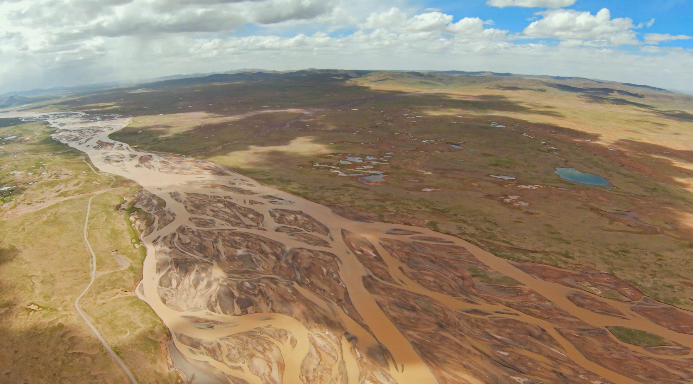

TUOTUOHE / QINGHAI / 4,534.5 M
沱沱河TUOTUOHE
三江源中心区域的高原河流与气象观测地点。我的低空、高空试验在这里开展。A high-plateau river and meteorological observation area in the center of Sanjiangyuan. My low- and high-altitude tests were carried out here.
FIELD SITE / METEOROLOGY
为什么是沱沱河WHY TUOTUOHE
沱沱河位于青藏高原腹地，海拔约 4,534.5 m，具有低温、低压、强湍流和复杂地形等条件。沱沱河国家高空气象观测站承担高空气象观测业务，是验证探空装置环境适应性和通信链路可靠性的合适地点。
我的试验包括无人机带载低空测试和约 30,000 m 高空测试。试验在空域审批和相关单位沟通基础上进行，重点观察飞行器、控制、通信和终端功能。
Tuotuohe lies in the interior of the Tibetan Plateau at approximately 4,534.5 m, with cold temperatures, low pressure, strong turbulence and complex terrain. The national high-altitude meteorological station operates upper-air observations, making the site relevant for testing environmental tolerance and communication reliability.
My work here included drone-assisted low-altitude tests and a planned approximately 30,000 m high-altitude test. The tests were arranged with airspace approval and coordination with relevant institutions, focusing on the aircraft, control, radio link and operational terminal.